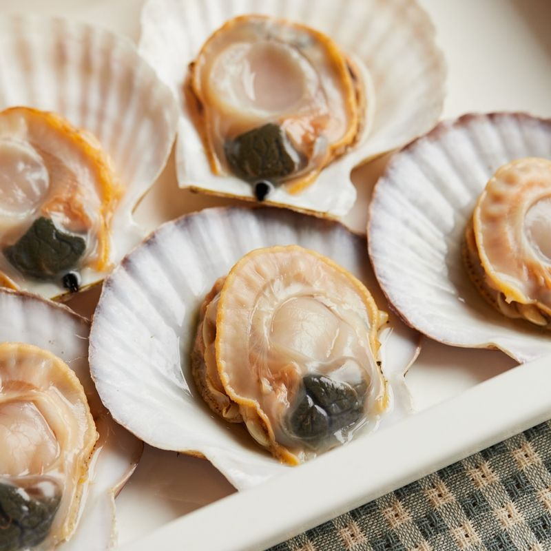
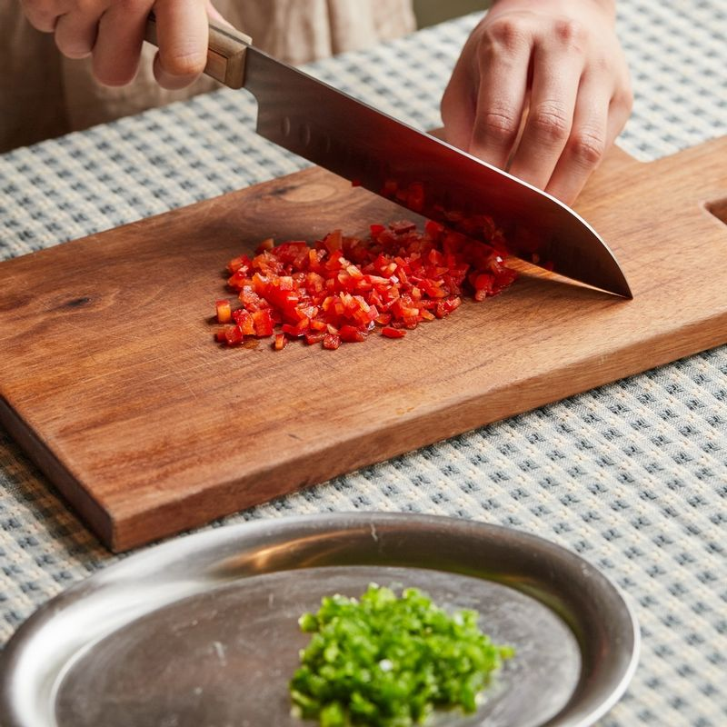
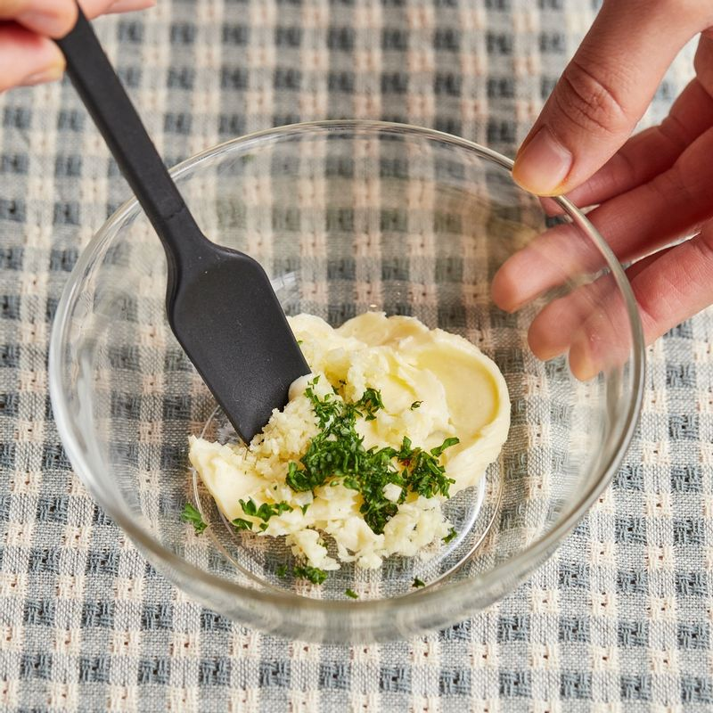
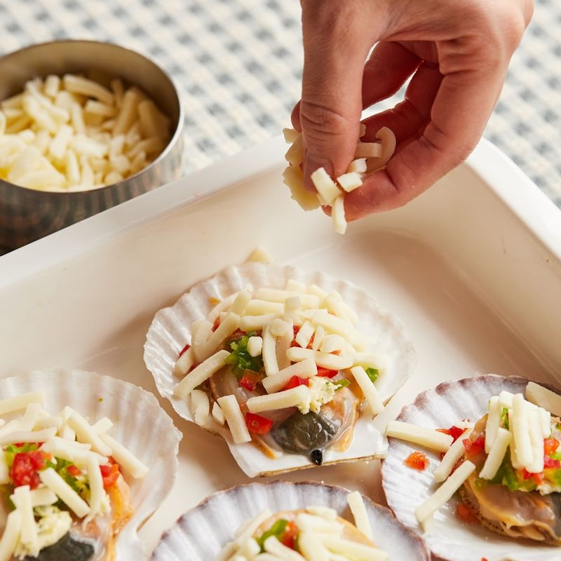
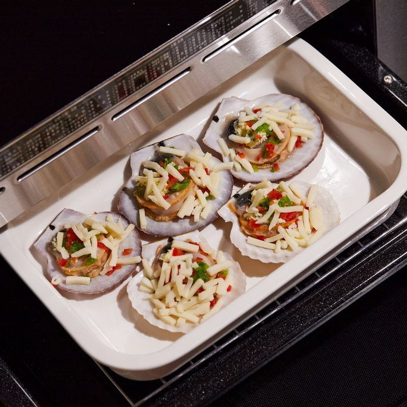
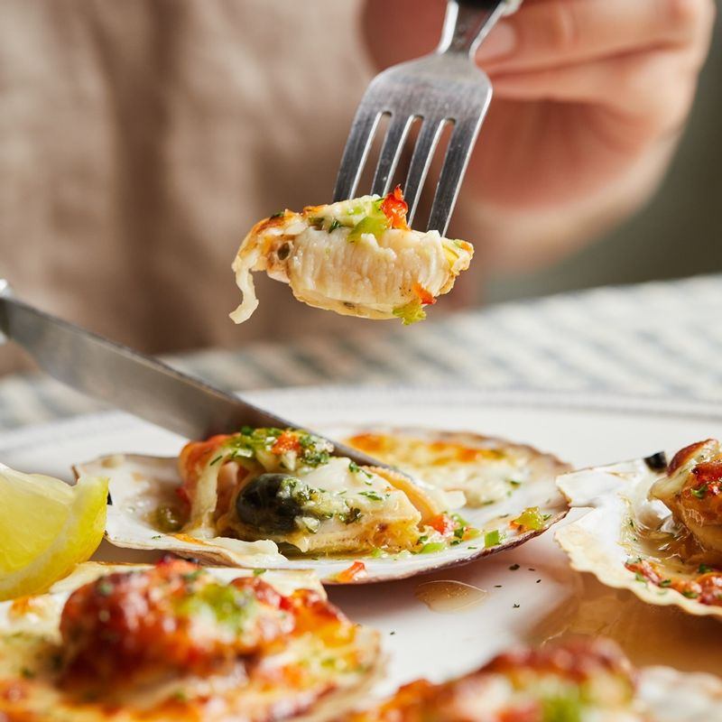

-

가리비는 한쪽 껍질을 떼어내 주세요.
(tip. 가리비는 뜨거운 물에 넣었다 바로 빼거나, 껍질 사이로 칼을 넣어 관자 부분을 떼어주면 껍질과 살을 쉽게 분리할 수 있어요)
-

청, 홍 피망은 잘게 다져주세요.
-

버터에 다진 마늘과 파슬리를 넣고 섞어 마늘 버터를 만들어주세요.
-

가리비 위에 마늘 버터와 다진 피망을 올린 다음 슈레드
모짜렐라치즈를 올려주세요.
-

법랑 접시에 석쇠를 놓고 가리비를 올린 후 3단에 넣고 광파오븐 자동 요리 <구이>에서 <가리비 치즈구이> 1판 분량을 선택한 후 구워주세요.
-

완성된 가리비 치즈구이를 접시에 담아 맛있게 즐겨주세요.